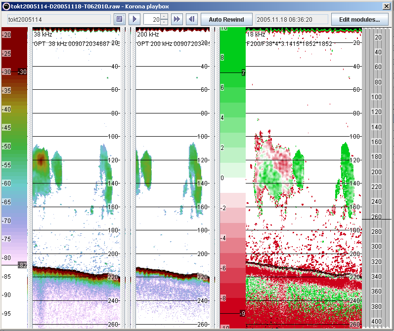

This section describes how the red-green colour-scale may be used to compare backscatter at two frequencies. The module setup is expanded from Example 3 (school detection): A ThresholdModule is inserted at the end to remove all data at all frequencies weaker than -70 dB, and then an ExpressionModule. The ExpressionModule generates a new synthetic data-channel: F200/F38*(4*3.1415*1852*1852). F200 is the 200 kHz data-channel, and F38 is the 38 kHz data-channel. The somewhat strange looking constant 4*PI*18522is because all colour-scales expect to read power-values and then convert those to sv, so the factor is needed to make the resulting echogram symmetric around 0 dB. By applying the red-green colour-scale, and setting the limits between -10 (dB) and 10 (dB), the result below appears. The left panel is 38 kHz data, the middle is 200 kHz, and the right is the combined channel with the red-green colour-scale used. In the example below, herring (that has swimbladder) appears in red colour and Atlantic mackerel (no swimbladder) in green.
